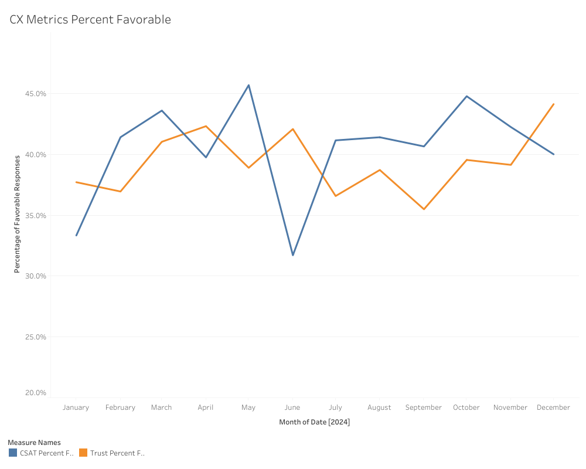
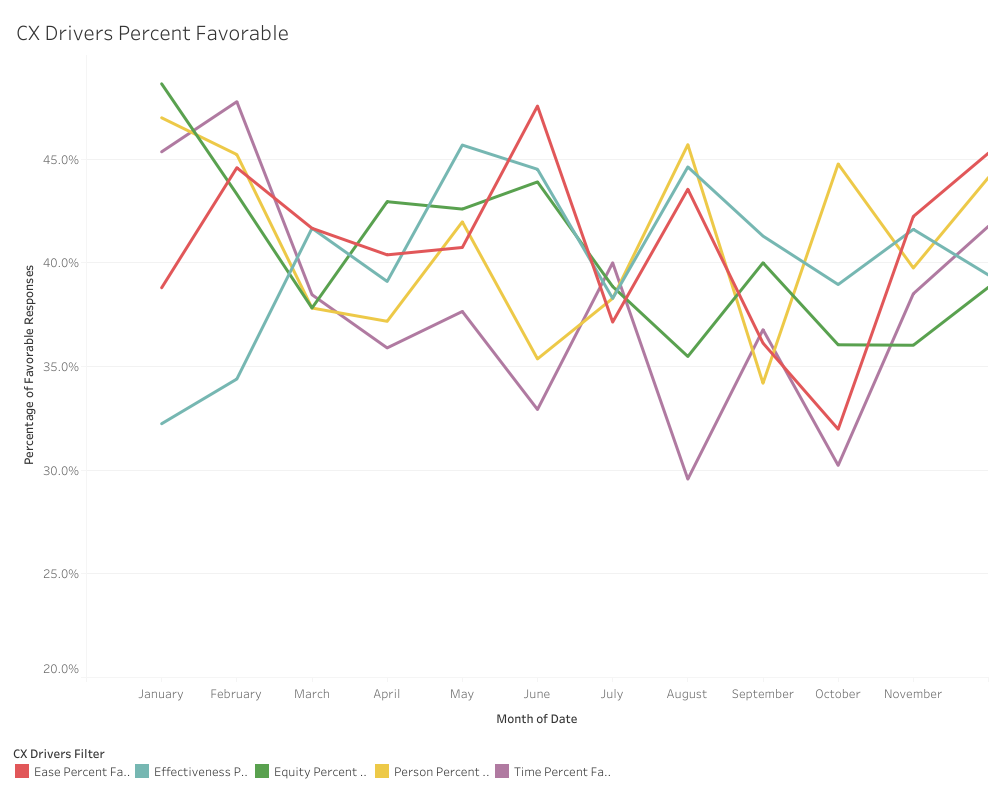
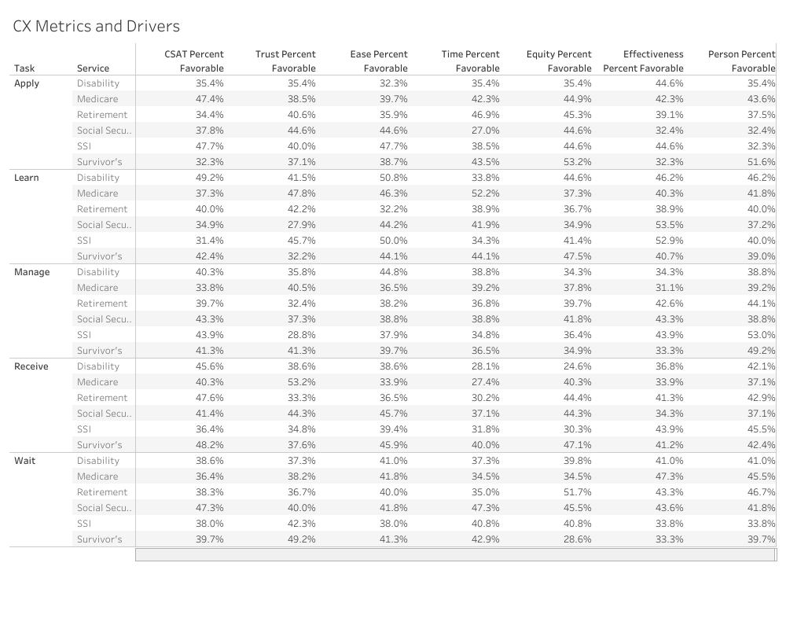

Voice of Customer
Project Summary
The agency did not have an ongoing communication strategy with our customers or employees. Feedback collected from customers was not scaled to support enterprise wide actions or strategic decision making.
Results
We were able to deploy over 20 surveys that collected feedback for general web users, specific digital product touchpoints, in-person visits, and phone interactions. During the first year, we onboarded over 300 employees in various roles including executives, regional office staff, office managers, and product team members.
Process
Key Learnings
Staff members often were unsure of what their over-arching goals were once they collected feedback from customers. It was our purpose to understand their needs, help them determine the best way to capture customer feedback, and identify metrics to define success.
Problem Space
Challenge
Create a Voice of Customer program that provides a way for product teams to collect and review customer feedback. Ensure it can scale to an enterprise solution.
Goals and Objectives
- Deploy a Voice of Customer program for enterprise usage across the agency.
- Start collecting feedback from members of the public to inform agency decision-making.
- Close the loop with customers experiencing issues online or with their attempts to obtain service.
- Ongoing communication with customers and employees about their experience throughout their journey life-cycle.
Process
We collected feedback from customers in various ways including:
Monitoring Feedback
CX Perception Metrics
We monitored primary CX metrics as customer satisfaction (CSAT) and trust. We built reports that allowed us to understand normal service trends over time. Then we could highlight changes after key events like product enhancements, policy changes, or unexpected closures.
CX Perception Drivers
We used CX drivers to understand the factors affecting CSAT and trust. Ease of doing business made the highest impact to customers describing a satisfactory interaction. Customers that left more neutral responses often were happy with the service representative but unhappy with the difficulty and complexity of completing their business.
Perception and Interaction Data
We paired this customer perception data with business interaction data to understand the full scope and severity of opportunity areas.
Conclusion
Understanding the customer’s satisfaction across different journeys and service areas allowed us to map experiences, blueprint interactions, and scope problems to find meaningful solutions. We hosted bi-weekly open office hours to allow product team members, executives, and regional staff to come and ask questions or learn from others' questions.